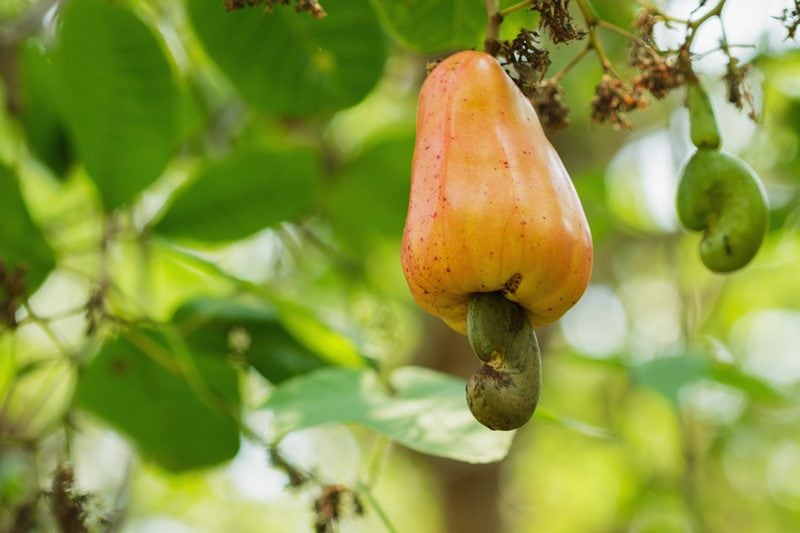
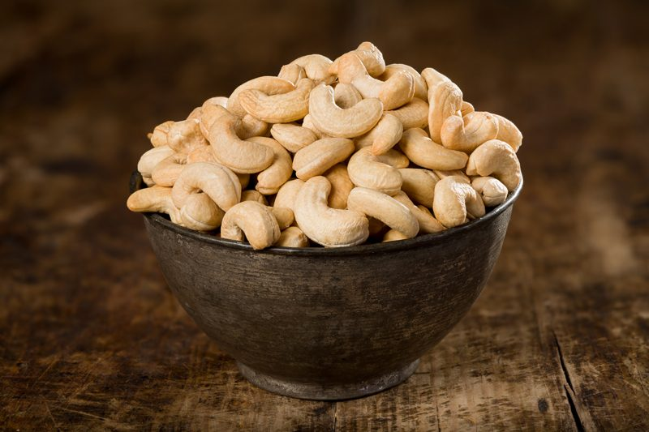

Cashew Fruit
Have you ever wondered where cashews came from? Have you just assumed throughout life that they grow on trees in a shell much like an almond or walnut? I did. I now find it so odd how “we” are not totally engrossed in knowing where our food comes from… other than the grocery store. Why do you suppose that is? Are we too busy to even investigate? Too lazy to care? Too far removed from their natural sources? I am guessing it’s a combination of it all.

I guess the first rule of business here is to clarify that cashews are not a nut but a fruit seed. Outside of those who live in Costa Rica, Sri Lanka, China, Malaysia, Philippines, Thailand, Colombia, Guatemala, Venezuela, the West Indies, Nigeria, Mozambique, Tanzania, and Kenya… (inhales deeply, did I miss any?) most of us have never been exposed to the whole fruit.
Why don’t we find the whole cashew fruit in the grocery store here in Oregon or wherever else you may live in the U.S.? I see passion fruit, dragon fruit, and other exotic fruits, why not cashew fruit? The reason is that the fruit is unable to be exported due to their very thin skin. The fruit is very juicy and starts to spoil almost immediately after being picked from the tree. There are two basic parts that make up this fruit; the apple and the cashew seed. Let’s dissect them a tad so we can better understand.
The Apple
- The yellow and orange fleshy part is called the apple, which grows to between 2″–4″ long.
- It is edible and tastes like a cross between a mango and a grapefruit.
- They are very juicy, and their juice is often added to tropical fruit drinks.
- It contains tannins, which are are antioxidants. They help to strengthen the immune system and fight free radicals which cause cancer.
- They contain high levels of vitamin C (five times more than oranges).
- It is rich in vitamins B1, B2, and B3 and contains calcium, iron, and beta-carotene.
- The cashew fruit is also known for its antibacterial properties and is used to kill worms and parasites in the body.
The (Cashew) Nut
- The kidney-shaped part that dangles from the base of the apples encloses the seed, it is called the fruit and within that is the “seed” which is what we know as a cashew.
- The cashew nut/seed is surrounded by a double-shell that is filled with anacardic acid, (serious skin irritant), phenolic resin (used as an insecticide), and urushiol (also found in poison ivy).
The Process – Each Cashew is Hand Cracked
So, let’s dial it back to the very beginning. A tree is planted and grows to the producing stage. Along the branches a cashew flower blooms and soon a one-inch nut forms (shaped somewhat like a boxing glove).
The cashew apple (pseudofruit) later swells between the nutshell and the stem. It takes 60-90 days for the cashew apple to ripen. When harvested, the apple can only keep for twenty-four hours before it begins to ferment.
When it comes to harvesting this fruit, the cultivator has to decide on whether or not they are harvesting their crop for the “apple” or for the “cashew seed.” The reason being is because, by the time the cashew seed (that dangles from the base of the “apple”) is ready to be used, the “apple” is spoiled.
Since we typically use the cashew seed itself in our raw dishes, let’s follow the path of the seed. The nuts are collected from the ground by hand. The nutshell has a double-wall (inner and outer wall), separated by a honeycomb tissue infused with caustic oil.
Cracking the nuts fresh results in the oil contaminating the kernel, so careful processes need to be taken to drive off these oils before they are shelled.
Following a heat treatment, the exterior layer needs to be removed, and an interior hard shell must be cracked before you reach the actual cashew. Here is a really quick video (click here) that shows how they are processed.
A certain nut producer in Indonesia uses a special technique with specially-designed tools (without using any heat at all) to open the shell cleanly every time without ever exposing the cashew nut to the resin. The raw cashews are much sweeter, tastier, and nutritious than their cooked counterparts. To read more about this process click (here). To purchase truly raw cashews click (here).

Disclaimer
This website is not intended to provide medical advice. All content, including text, graphics, images, and information available on this site is for general informational, entertainment, and educational purposes only. The content is not intended to be a substitute for professional diagnosis or treatment. The author of this site is not responsible for any adverse effects that may occur from the application of the information on this site. You are encouraged to make your own healthcare decisions, based on your research and in partnership with a qualified healthcare professional.
© AmieSue.com